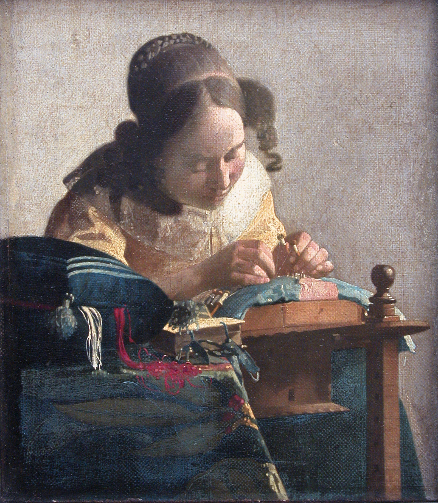
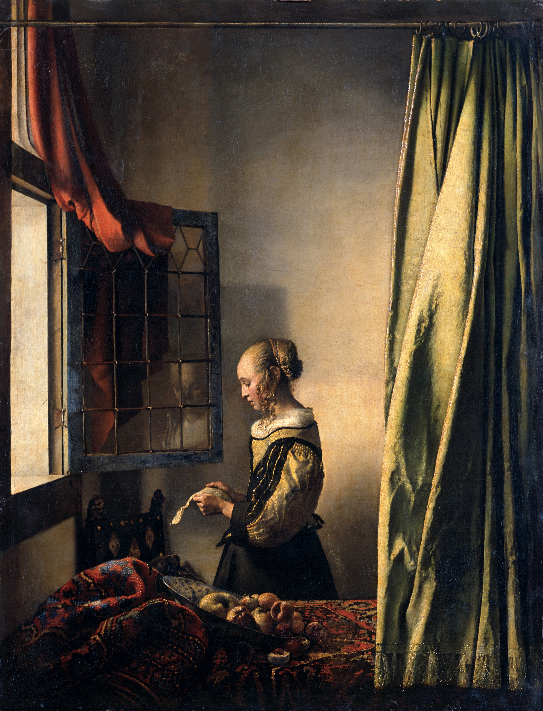

Johannes Vermeer

Johannes Vermeer (October 1632 – December 1675), in original Dutch: Jan Vermeer van Delft, was a Dutch Baroque Period painter who specialized in domestic interior scenes of middle class life. During his lifetime, he was a moderately successful provincial genre painter, recognized in Delft and The Hague. Nonetheless, he produced relatively few paintings and evidently was not wealthy, leaving his wife and children in debt at his death. Vermeer worked slowly and with great care, and frequently used very expensive pigments. He is particularly renowned for his masterly treatment and use of light in his work. "Almost all his paintings," Hans Koningsberger wrote, "are apparently set in two smallish rooms in his house in Delft; they show the same furniture and decorations in various arrangements and they often portray the same people, mostly women."
Other works:
"Woman Holding a Balance"
"The Lacemaker"
"Girl Reading a Letter at an Open Window"
"The Astronomer"